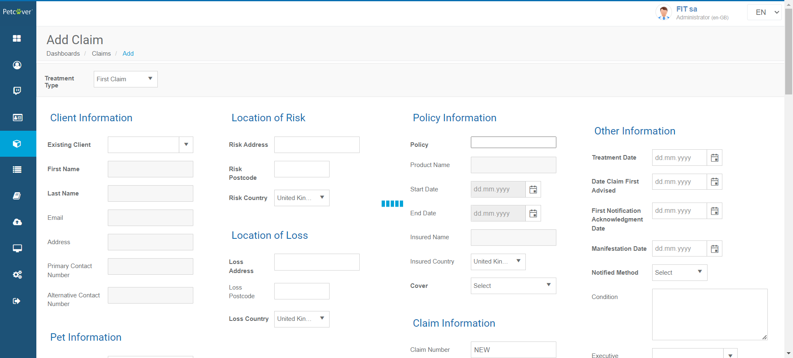
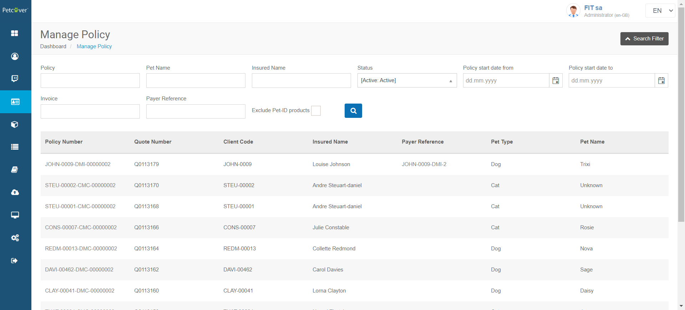
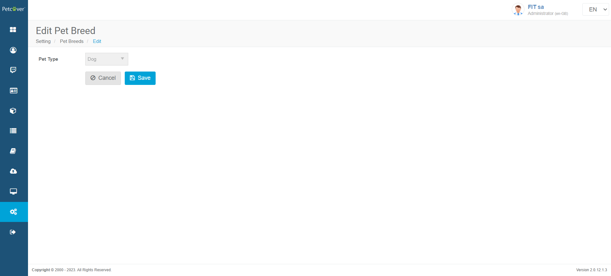

-
Verify Account Module Functionalities
0h 2m 16s+848ms
16:46:12 pmVerify Account Module Functionalities
08.24.2023 16:46:12 08.24.2023 16:48:29 0h 2m 16s+848msAll hyperlinks with icons on account page should workGiven User should log in with username "sa" and password "Good2go@2019" to the admin panelWhen User clicks on account icon on left tool barWhen User clicks on iconThen User will redirect to respected pagehook.hooks.displayUrl(io.cucumber.java.Scenario)https://fitlocal2.britishpetinsurance.co.uk:94/Filter Policy review information upon policy end date and to dateGiven User should log in with username "sa" and password "Good2go@2019" to the admin panelWhen User clicks on account icon on left tool barWhen User clicks on policy review button on account pageAnd User enters policy end date and to date value on policy review pageAnd User clicks on search button on policy review pageThen Appropriate data displays on policy review page upon date valueshook.hooks.displayUrl(io.cucumber.java.Scenario)https://fitlocal2.britishpetinsurance.co.uk:94/ -
Verify Admin Module Features
0h 1m 53s+731ms
16:48:35 pmVerify Admin Module Features
08.24.2023 16:48:35 08.24.2023 16:50:29 0h 1m 53s+731msThe Letter Templates page should open with the list of existing Letter Templates.Given User should log in with username "sa" and password "Good2go@2019" to the admin panelWhen User clicks on administration icon on left tool barAnd User clicks on letter template icon on administration pageThen User will able to see list of existing lettershook.hooks.displayUrl(io.cucumber.java.Scenario)https://fitlocal2.britishpetinsurance.co.uk:94/To check Edit Letter Template page should open with the template data in editable format.Given User should log in with username "sa" and password "Good2go@2019" to the admin panelWhen User clicks on administration icon on left tool barAnd User clicks on letter template icon on administration pageAnd User clicks on edit icon against letter letter template name in listThen User will redirects to edit letter template pageAnd User will able to edit available fields on pagehook.hooks.displayUrl(io.cucumber.java.Scenario)https://fitlocal2.britishpetinsurance.co.uk:94/Verify that the Administration page displays with a set of icons and corresponding page should opens on clicking individual icon.Given User should log in with username "sa" and password "Good2go@2019" to the admin panelWhen User clicks on administration icon on left tool barThen Account page displays with icons and corresponding page displays by clicking on icon.hook.hooks.displayUrl(io.cucumber.java.Scenario)https://fitlocal2.britishpetinsurance.co.uk:94/ -
Verify Approve Claim Module Features
0h 0m 15s+995ms
16:50:40 pmVerify Approve Claim Module Features
08.24.2023 16:50:40 08.24.2023 16:50:56 0h 0m 15s+995msVerify that the Approve Claim page displays with data in the table after clicking on approve claim icon on dashboard pageGiven User should log in with username "sa" and password "Good2go@2019" to the admin panelWhen User clicks on approve claims icon on left tool barThen User will redirect to page with "Approve Claims" message on itAnd User will able to see data on approve claims pagehook.hooks.displayUrl(io.cucumber.java.Scenario)https://fitlocal2.britishpetinsurance.co.uk:94/ -
Verify Client Module Features
0h 2m 48s+839ms
16:51:03 pmVerify Client Module Features
08.24.2023 16:51:03 08.24.2023 16:53:52 0h 2m 48s+839msEnsure that the Manage Client page displays list of client data after clicking on client icon on left tool barGiven User should log in with username "sa" and password "Good2go@2019" to the admin panelWhen User clicks on client icon on left tool barThen Manage client page displays with list of clientshook.hooks.displayUrl(io.cucumber.java.Scenario)https://fitlocal2.britishpetinsurance.co.uk:94/Add claim page should display with all details by clicking on add claim icon on cog dropdown menu on view client pageGiven User should log in with username "sa" and password "Good2go@2019" to the admin panelWhen User clicks on client icon on left tool barWhen User clicks on client code on manage client pageAnd User clicks on add claim icon on cog dropdown menu on view client pageThen Add claim page should display with all detailshook.hooks.displayUrl(io.cucumber.java.Scenario)https://fitlocal2.britishpetinsurance.co.uk:94/Client Refund Unallocated Balance page displays with all details by clicking on client refund unallocated balance icon on cog dropdown menu on view client pageGiven User should log in with username "sa" and password "Good2go@2019" to the admin panelWhen User clicks on client icon on left tool barWhen User clicks on client code on manage client pageAnd User clicks on client refund unallocated balance icon on cog dropdown menu on view client pageThen Client Refund Unallocated Balance page displays with all detailshook.hooks.displayUrl(io.cucumber.java.Scenario)https://fitlocal2.britishpetinsurance.co.uk:94/Client Refund Credit Note page displays with all details by clicking on client refund credit note icon on cog dropdown menu on view client pageGiven User should log in with username "sa" and password "Good2go@2019" to the admin panelWhen User clicks on client icon on left tool barWhen User clicks on client code on manage client pageAnd User clicks on client refund credit note icon on cog dropdown menu on view client pageThen Client Refund Credit Note page displays with all detailshook.hooks.displayUrl(io.cucumber.java.Scenario)https://fitlocal2.britishpetinsurance.co.uk:94/Client Allocate Payment page displays with all details by clicking on client allocate payment icon on cog dropdown menu on view client pageGiven User should log in with username "sa" and password "Good2go@2019" to the admin panelWhen User clicks on client icon on left tool barWhen User clicks on client code on manage client pageAnd User clicks on client allocate payment icon on cog dropdown menu on view client pageThen Client Allocate Payment page displays with all detailshook.hooks.displayUrl(io.cucumber.java.Scenario)https://fitlocal2.britishpetinsurance.co.uk:94/Client Account Maintenance page displays with all details by clicking on client account maintenance page icon on cog dropdown menu on view client pageGiven User should log in with username "sa" and password "Good2go@2019" to the admin panelWhen User clicks on client icon on left tool barWhen User clicks on client code on manage client pageAnd User clicks on client account maintenance page icon on cog dropdown menu on view client pageThen Client Account Maintenance page displays with all detailshook.hooks.displayUrl(io.cucumber.java.Scenario)https://fitlocal2.britishpetinsurance.co.uk:94/ -
Verify DashBoard Items
0h 0m 10s+905ms
16:53:58 pmVerify DashBoard Items
08.24.2023 16:53:58 08.24.2023 16:54:09 0h 0m 10s+905msVerify Client,Quote,Policy,Claim details on dash board pageGiven User should log in with username "sa" and password "Good2go@2019" to the admin panelThen Dash board page displays with total and monthly numbers of client,quote,policy and claimhook.hooks.displayUrl(io.cucumber.java.Scenario)https://fitlocal2.britishpetinsurance.co.uk:94/ -
Launched Page Verification by displayed text
0h 0m 1s+264ms
16:54:15 pmLaunched Page Verification by displayed text
08.24.2023 16:54:15 08.24.2023 16:54:16 0h 0m 1s+264msCheck displayed text on homepageGiven User is one the website login pageWhen User verify admin login page through urlThen User will able to see text "(en-GB)" behind copyright messagehook.hooks.displayUrl(io.cucumber.java.Scenario)https://fitlocal2.britishpetinsurance.co.uk:94/ -
Verify Log out functionality
0h 0m 13s+132ms
16:54:22 pmVerify Log out functionality
08.24.2023 16:54:22 08.24.2023 16:54:35 0h 0m 13s+132msVerify log out feature of systemGiven User should log in with username "sa" and password "Good2go@2019" to the admin panelWhen User clicks on Logoff buttonThen User will redirect to login pagehook.hooks.displayUrl(io.cucumber.java.Scenario)https://fitlocal2.britishpetinsurance.co.uk:94/ -
Login To Admin Panel
0h 0m 14s+614ms
16:54:42 pmLogin To Admin Panel
08.24.2023 16:54:42 08.24.2023 16:54:57 0h 0m 14s+614msVerify Login eventGiven User is one the website login pageAnd User enters username "sa" and password "Good2go@2019" and click signIn buttonThen User will be able to see dashBoardAnd User will be able to see "(en-GB)" text on right top corner of pagehook.hooks.displayUrl(io.cucumber.java.Scenario)https://fitlocal2.britishpetinsurance.co.uk:94/ -
Verify Manage Claim Module Features
0h 2m 51s+966ms
16:55:02 pmVerify Manage Claim Module Features
08.24.2023 16:55:02 08.24.2023 16:57:54 0h 2m 51s+966msManage claims page should open with the claim details after clicking on manage claim icon on left tool barGiven User should log in with username "sa" and password "Good2go@2019" to the admin panelWhen User clicks on manage claims icon on left tool barThen User will able see all data available on manage claim pagehook.hooks.displayUrl(io.cucumber.java.Scenario)https://fitlocal2.britishpetinsurance.co.uk:94/All data under date column displays with dd-mm-yyyy format and data under amount should prefixed by £ sign on manage claim pageGiven User should log in with username "sa" and password "Good2go@2019" to the admin panelWhen User clicks on manage claims icon on left tool barThen All data under treatment and cliam first advised date column displays in dd-mm-yyyy formatThen All data under Amount paybale column prefixed by £ signhook.hooks.displayUrl(io.cucumber.java.Scenario)https://fitlocal2.britishpetinsurance.co.uk:94/User will redirect to respected claim information page by clicking on claim number link on manage claim pageGiven User should log in with username "sa" and password "Good2go@2019" to the admin panelWhen User clicks on manage claims icon on left tool barWhen User clicks on claim number on manage claim pageThen User will redirects to respected claim information pagehook.hooks.displayUrl(io.cucumber.java.Scenario)https://fitlocal2.britishpetinsurance.co.uk:94/Add claim page displays all dropdowns with valid items and date appears with calender iconGiven User should log in with username "sa" and password "Good2go@2019" to the admin panelWhen User clicks on manage claims icon on left tool barWhen User clicks on add claim buttonThen User will redirect to add claim pageAnd Page has all dropdown with valid list items'hook.hooks.displayUrl(io.cucumber.java.Scenario)https://fitlocal2.britishpetinsurance.co.uk:94/hook.hooks.takeScreenShotOnFailure(io.cucumber.java.Scenario)Filter Claim details on manage claim page upon from and to date value of claim first advised on manage claim pageGiven User should log in with username "sa" and password "Good2go@2019" to the admin panelWhen User clicks on manage claims icon on left tool barWhen User enters value of from and to date value of claim first advised on manage claim pageAnd User clicks on search button on manage claim pageThen Details of claim on manage claim page filters upon value of from and to date value of claim first advised on manage claim pagehook.hooks.displayUrl(io.cucumber.java.Scenario)https://fitlocal2.britishpetinsurance.co.uk:94/ -
Verify Policy Module Features
0h 3m 52s+633ms
16:58:00 pmVerify Policy Module Features
08.24.2023 16:58:00 08.24.2023 17:01:52 0h 3m 52s+633msList of policies should display by clicking on policy icon on left tool barGiven User should log in with username "sa" and password "Good2go@2019" to the admin panelWhen User clicks on policy icon on left tool barThen User can see "Manage Policy" message with all policy datahook.hooks.displayUrl(io.cucumber.java.Scenario)https://fitlocal2.britishpetinsurance.co.uk:94/Verify dates under start date and end date should display with dd-mm-yyyy format on manage policy pageGiven User should log in with username "sa" and password "Good2go@2019" to the admin panelWhen User clicks on policy icon on left tool barThen All data under Start date and And date displays in dd-mm-yyyy formathook.hooks.displayUrl(io.cucumber.java.Scenario)https://fitlocal2.britishpetinsurance.co.uk:94/Respected policy information should displays by clicking on individual policy number on manage policy pageGiven User should log in with username "sa" and password "Good2go@2019" to the admin panelWhen User clicks on policy icon on left tool barWhen User clicks on policy numberThen User will redirect to policy information pageStep skippedhook.hooks.displayUrl(io.cucumber.java.Scenario)https://fitlocal2.britishpetinsurance.co.uk:94/hook.hooks.takeScreenShotOnFailure(io.cucumber.java.Scenario)Appropriate policy data should display upon selecting an option from the status drop down on managing policy pageGiven User should log in with username "sa" and password "Good2go@2019" to the admin panelWhen User clicks on policy icon on left tool barWhen User selects any options from status dropdownThen Appropriate data displays on manage policy page depend on drop down optionhook.hooks.displayUrl(io.cucumber.java.Scenario)https://fitlocal2.britishpetinsurance.co.uk:94/Filter policy details on manage policy page upon from and to date value of policy on manage policy pageGiven User should log in with username "sa" and password "Good2go@2019" to the admin panelWhen User clicks on policy icon on left tool barWhen User enters value of from and to date value of policy on manage policy pageAnd User clicks on search button on manage policy pageThen Details of policy on manage policy page filters upon value of from and to date value of policyhook.hooks.displayUrl(io.cucumber.java.Scenario)https://fitlocal2.britishpetinsurance.co.uk:94/Verify that add claim page should open with all details by clicking on add claim icon of cog drop down against policy number on manage policy pageGiven User should log in with username "sa" and password "Good2go@2019" to the admin panelWhen User clicks on policy icon on left tool barWhen User clicks on add claim icon of cog drop down against policy number on manage policy pageThen Add claim displays with all detailsStep skippedhook.hooks.displayUrl(io.cucumber.java.Scenario)https://fitlocal2.britishpetinsurance.co.uk:94/hook.hooks.takeScreenShotOnFailure(io.cucumber.java.Scenario)Policy endorsement page displays with all details by clicking add endorsement icon of cog drop down on policy information pageGiven User should log in with username "sa" and password "Good2go@2019" to the admin panelWhen User clicks on policy icon on left tool barWhen User selects any active option from status dropdown on manage policy pageAnd User clicks on policy number link on manage policy pageAnd User selects add endorsement icon of cog drop down on policy information pageStep skippedThen Policy endorsement page displays with all detailsStep skippedhook.hooks.displayUrl(io.cucumber.java.Scenario)https://fitlocal2.britishpetinsurance.co.uk:94/hook.hooks.takeScreenShotOnFailure(io.cucumber.java.Scenario)Allocate payment page displays with all details by clicking add allocate payment icon of cog drop down on policy information pageGiven User should log in with username "sa" and password "Good2go@2019" to the admin panelWhen User clicks on policy icon on left tool barWhen User selects any active option from status dropdown on manage policy pageAnd User clicks on policy number link on manage policy pageAnd User selects add allocate payment icon of cog drop down on policy information pageStep skippedThen Add allocate payment page displays with all detailsStep skippedhook.hooks.displayUrl(io.cucumber.java.Scenario)https://fitlocal2.britishpetinsurance.co.uk:94/hook.hooks.takeScreenShotOnFailure(io.cucumber.java.Scenario) -
Verify Quote Module Features
0h 5m 46s+229ms
17:01:59 pmVerify Quote Module Features
08.24.2023 17:01:59 08.24.2023 17:07:45 0h 5m 46s+229msManage Quote page displays with list of quotes by clicking on quote icon on left tool bar.Given User should log in with username "sa" and password "Good2go@2019" to the admin panelWhen User clicks on quote icon on left tool barThen Manage quote page displays with list of quotehook.hooks.displayUrl(io.cucumber.java.Scenario)https://fitlocal2.britishpetinsurance.co.uk:94/To verify dates under Quote date and Expire date columns displays in dd-mm-yyyy formatGiven User should log in with username "sa" and password "Good2go@2019" to the admin panelWhen User clicks on quote icon on left tool barThen User will able to see all data under quote date and expire date column displays with dd-mm-yyyy formathook.hooks.displayUrl(io.cucumber.java.Scenario)https://fitlocal2.britishpetinsurance.co.uk:94/Data under total and monthly premium column should prefixed by £ signGiven User should log in with username "sa" and password "Good2go@2019" to the admin panelWhen User clicks on quote icon on left tool barThen User will able to see all data under total and monthly premium colum prefixed by £ signhook.hooks.displayUrl(io.cucumber.java.Scenario)https://fitlocal2.britishpetinsurance.co.uk:94/On the Add Quote page, verify that the Product dropdown appears with list of productsGiven User should log in with username "sa" and password "Good2go@2019" to the admin panelWhen User clicks on quote icon on left tool barWhen User clicks on add quote buttonThen On add quote page product dropdown will appear with desired listhook.hooks.displayUrl(io.cucumber.java.Scenario)https://fitlocal2.britishpetinsurance.co.uk:94/Respected quote information page will be displayed upon clicking quote number on manage quote pageGiven User should log in with username "sa" and password "Good2go@2019" to the admin panelWhen User clicks on quote icon on left tool barWhen User clicks on quote number on manage quote pageThen Quote Information page displays with detailshook.hooks.displayUrl(io.cucumber.java.Scenario)https://fitlocal2.britishpetinsurance.co.uk:94/Items on manage quote page displays upon option selects from quote status dropdownGiven User should log in with username "sa" and password "Good2go@2019" to the admin panelWhen User clicks on quote icon on left tool barWhen User selects appropriate option from quote status dropdownThen Respected data will be displayed on Manage quote pagehook.hooks.displayUrl(io.cucumber.java.Scenario)https://fitlocal2.britishpetinsurance.co.uk:94/Fetch list of quote based on product option from product dropdown on manage quote pageGiven User should log in with username "sa" and password "Good2go@2019" to the admin panelWhen User clicks on quote icon on left tool barWhen User selects appropriate option from product dropdown on manage quote pageAnd User clicks on search button on manage quote pageThen Appropriate list of quote will displayhook.hooks.displayUrl(io.cucumber.java.Scenario)https://fitlocal2.britishpetinsurance.co.uk:94/Fetch list of quote based on option from Is referred dropdown on manage quote pageGiven User should log in with username "sa" and password "Good2go@2019" to the admin panelWhen User clicks on quote icon on left tool barWhen User selects appropriate option from Is referred dropdown on manage quote pageAnd User clicks on search button on manage quote pageThen Appropriate list of quote will display upon drop down optionhook.hooks.displayUrl(io.cucumber.java.Scenario)https://fitlocal2.britishpetinsurance.co.uk:94/Fetch list of quote based on pet id products checkbox on manage quote pageGiven User should log in with username "sa" and password "Good2go@2019" to the admin panelWhen User clicks on quote icon on left tool barWhen User selects pet id products checkbox on manage quote pageAnd User clicks on search button on manage quote pageThen Appropriate list of quote will display upon pet id products checkbox on manage quote pagehook.hooks.displayUrl(io.cucumber.java.Scenario)https://fitlocal2.britishpetinsurance.co.uk:94/To check whether user will able able to redirect and see data on microchip file upload page after clicking on upload microchip button on manage quote pageGiven User should log in with username "sa" and password "Good2go@2019" to the admin panelWhen User clicks on quote icon on left tool barWhen User clicks on upload microchip file buttonThen User will be able to see microchip file upload page with datahook.hooks.displayUrl(io.cucumber.java.Scenario)https://fitlocal2.britishpetinsurance.co.uk:94/Upload details window should open by clicking on file name link on microchip file upload pageGiven User should log in with username "sa" and password "Good2go@2019" to the admin panelWhen User clicks on quote icon on left tool barWhen User clicks on upload microchip file buttonAnd User clicks on filename link on upload microchip pageThen Upload details window displays with all detailshook.hooks.displayUrl(io.cucumber.java.Scenario)https://fitlocal2.britishpetinsurance.co.uk:94/Pending Microchip displays with details by clicking on pending microchip button on manage quote pageGiven User should log in with username "sa" and password "Good2go@2019" to the admin panelWhen User clicks on quote icon on left tool barWhen User clicks on pending microchip file buttonThen Pending Microchip page displays with detailshook.hooks.displayUrl(io.cucumber.java.Scenario)https://fitlocal2.britishpetinsurance.co.uk:94/ -
Verify Report Module Features
0h 4m 10s+744ms
17:07:59 pmVerify Report Module Features
08.24.2023 17:07:59 08.24.2023 17:12:09 0h 4m 10s+744msClick on Report icon on the left tool bar. Verify that the Report Page displays with six sections.Given User should log in with username "sa" and password "Good2go@2019" to the admin panelWhen User clicks on reports icon on left tool barThen User will able to see total six section of report categoryhook.hooks.displayUrl(io.cucumber.java.Scenario)https://fitlocal2.britishpetinsurance.co.uk:94/User will able to redirect on respected report page by clicking on report icon on report pageGiven User should log in with username "sa" and password "Good2go@2019" to the admin panelWhen User clicks on reports icon on left tool barWhen User clicks on reports iconThen Respected report page displayshook.hooks.displayUrl(io.cucumber.java.Scenario)https://fitlocal2.britishpetinsurance.co.uk:94/Add premium and claim adjustments window opens by clicking on adjustment button on section 26 and 27 report pageGiven User should log in with username "sa" and password "Good2go@2019" to the admin panelWhen User clicks on reports icon on left tool barWhen User clicks on Trust summary section button on report pageAnd User clicks on adjustment button on section report pageThen Add premium and claim adjustments window opens with all detailshook.hooks.displayUrl(io.cucumber.java.Scenario)https://fitlocal2.britishpetinsurance.co.uk:94/Payment window opens by clicking on payments button on section 26 and 27 report pageGiven User should log in with username "sa" and password "Good2go@2019" to the admin panelWhen User clicks on reports icon on left tool barWhen User clicks on Trust summary section button on report pageAnd User clicks on payments button on section report pageThen Payments window opens with all detailshook.hooks.displayUrl(io.cucumber.java.Scenario)https://fitlocal2.britishpetinsurance.co.uk:94/Opening and Closing bank balance window opens by clicking on bank button on section 26 and 27 report pageGiven User should log in with username "sa" and password "Good2go@2019" to the admin panelWhen User clicks on reports icon on left tool barWhen User clicks on Trust summary section button on report pageAnd User clicks on bank button on section report pageThen Opening and Closing bank balance window opens with all detailshook.hooks.displayUrl(io.cucumber.java.Scenario)https://fitlocal2.britishpetinsurance.co.uk:94/ -
Verify Setting Module Features
0h 4m 38s+506ms
17:12:15 pmVerify Setting Module Features
08.24.2023 17:12:15 08.24.2023 17:16:54 0h 4m 38s+506msAll hyperlinks with icons on setting page should workGiven User should log in with username "sa" and password "Good2go@2019" to the admin panelWhen User clicks on look up values icon on left tool barWhen User clicks on icon on setting pageThen User will able to redirect to respected pagehook.hooks.displayUrl(io.cucumber.java.Scenario)https://fitlocal2.britishpetinsurance.co.uk:94/To verify whether Manage Pet Breed page displays with Pet Breed details by clicking on Pet Breed icon on setting pageGiven User should log in with username "sa" and password "Good2go@2019" to the admin panelWhen User clicks on look up values icon on left tool barWhen User clicks on pet breed icon on setting pageThen Manage pet breed page displays with all task detailshook.hooks.displayUrl(io.cucumber.java.Scenario)https://fitlocal2.britishpetinsurance.co.uk:94/Edit Pet Breed page displays upon clicking on edit icon against pet breed name on manage pet breed pageGiven User should log in with username "sa" and password "Good2go@2019" to the admin panelWhen User clicks on look up values icon on left tool barWhen User clicks on pet breed icon on setting pageAnd User clicks on edit icon against pet breed name on manage pet breed pageThen Edit pet breed page displays in editable formathook.hooks.displayUrl(io.cucumber.java.Scenario)https://fitlocal2.britishpetinsurance.co.uk:94/hook.hooks.takeScreenShotOnFailure(io.cucumber.java.Scenario)To verify whether Manage Exclusion page displays with exclusion details by clicking on exclusion icon on setting pageGiven User should log in with username "sa" and password "Good2go@2019" to the admin panelWhen User clicks on look up values icon on left tool barWhen User clicks on exclusion icon on setting pageThen Manage exclusion page displays with all task detailshook.hooks.displayUrl(io.cucumber.java.Scenario)https://fitlocal2.britishpetinsurance.co.uk:94/Add exclusion page displays will all details when user clicks on add exclusion icon on manage exclusion pageGiven User should log in with username "sa" and password "Good2go@2019" to the admin panelWhen User clicks on look up values icon on left tool barWhen User clicks on exclusion icon on setting pageAnd User clicks on clicks on add exclusion icon on manage exclusion pageThen Add exclusion page displays with all detailshook.hooks.displayUrl(io.cucumber.java.Scenario)https://fitlocal2.britishpetinsurance.co.uk:94/Edit exclusion page displays upon clicking on edit icon against exclusion code on manage exclusion pageGiven User should log in with username "sa" and password "Good2go@2019" to the admin panelWhen User clicks on look up values icon on left tool barWhen User clicks on exclusion icon on setting pageAnd User clicks on edit icon against exclusion code on manage exclusion pageThen Edit exclusion page displays in editable formathook.hooks.displayUrl(io.cucumber.java.Scenario)https://fitlocal2.britishpetinsurance.co.uk:94/To verify whether Manage regular vet displays with vet details by clicking on regular vet icon on setting pageGiven User should log in with username "sa" and password "Good2go@2019" to the admin panelWhen User clicks on look up values icon on left tool barWhen User clicks on regular vet icon on setting pageThen Manage regular vet displays with all task detailshook.hooks.displayUrl(io.cucumber.java.Scenario)https://fitlocal2.britishpetinsurance.co.uk:94/To verify whether Manage hear about us page displays with details by clicking on hear about us icon on setting pageGiven User should log in with username "sa" and password "Good2go@2019" to the admin panelWhen User clicks on look up values icon on left tool barWhen User clicks on hear about us icon on setting pageThen Manage hear about us page displays with all task detailshook.hooks.displayUrl(io.cucumber.java.Scenario)https://fitlocal2.britishpetinsurance.co.uk:94/ -
Verify Task Module Features
0h 0m 14s+373ms
17:17:06 pmVerify Task Module Features
08.24.2023 17:17:06 08.24.2023 17:17:21 0h 0m 14s+373msUser will redirect to manage task page after clicking on task icon on left tool barGiven User should log in with username "sa" and password "Good2go@2019" to the admin panelWhen User clicks on task icon on left tool barThen User redirects to "Manage Task" pageAnd User see concern data on manage task pagehook.hooks.displayUrl(io.cucumber.java.Scenario)https://fitlocal2.britishpetinsurance.co.uk:94/
-
@Sanity
51 tests
48 3@Sanity
48 passed 3 failedStatus Timestamp TestName 16:46:12 pm All hyperlinks with icons on account page should work Verify Account Module Functionalities.All hyperlinks with icons on account page should work16:48:02 pm Filter Policy review information upon policy end date and to date Verify Account Module Functionalities.Filter Policy review information upon policy end date and to date16:48:35 pm The Letter Templates page should open with the list of existing Letter Templates. Verify Admin Module Features.The Letter Templates page should open with the list of existing Letter Templates.16:49:00 pm To check Edit Letter Template page should open with the template data in editable format. Verify Admin Module Features.To check Edit Letter Template page should open with the template data in editable format.16:49:33 pm Verify that the Administration page displays with a set of icons and corresponding page should opens on clicking individual icon. Verify Admin Module Features.Verify that the Administration page displays with a set of icons and corresponding page should opens on clicking individual icon.16:50:40 pm Verify that the Approve Claim page displays with data in the table after clicking on approve claim icon on dashboard page Verify Approve Claim Module Features.Verify that the Approve Claim page displays with data in the table after clicking on approve claim icon on dashboard page16:51:03 pm Ensure that the Manage Client page displays list of client data after clicking on client icon on left tool bar Verify Client Module Features.Ensure that the Manage Client page displays list of client data after clicking on client icon on left tool bar16:51:22 pm Add claim page should display with all details by clicking on add claim icon on cog dropdown menu on view client page Verify Client Module Features.Add claim page should display with all details by clicking on add claim icon on cog dropdown menu on view client page16:52:00 pm Client Refund Unallocated Balance page displays with all details by clicking on client refund unallocated balance icon on cog dropdown menu on view client page Verify Client Module Features.Client Refund Unallocated Balance page displays with all details by clicking on client refund unallocated balance icon on cog dropdown menu on view client page16:52:35 pm Client Refund Credit Note page displays with all details by clicking on client refund credit note icon on cog dropdown menu on view client page Verify Client Module Features.Client Refund Credit Note page displays with all details by clicking on client refund credit note icon on cog dropdown menu on view client page16:53:02 pm Client Allocate Payment page displays with all details by clicking on client allocate payment icon on cog dropdown menu on view client page Verify Client Module Features.Client Allocate Payment page displays with all details by clicking on client allocate payment icon on cog dropdown menu on view client page16:53:31 pm Client Account Maintenance page displays with all details by clicking on client account maintenance page icon on cog dropdown menu on view client page Verify Client Module Features.Client Account Maintenance page displays with all details by clicking on client account maintenance page icon on cog dropdown menu on view client page16:54:15 pm Check displayed text on homepage Launched Page Verification by displayed text.Check displayed text on homepage16:54:22 pm Verify log out feature of system Verify Log out functionality.Verify log out feature of system16:54:42 pm Verify Login event Login To Admin Panel.Verify Login event16:55:02 pm Manage claims page should open with the claim details after clicking on manage claim icon on left tool bar Verify Manage Claim Module Features.Manage claims page should open with the claim details after clicking on manage claim icon on left tool bar16:55:29 pm All data under date column displays with dd-mm-yyyy format and data under amount should prefixed by £ sign on manage claim page Verify Manage Claim Module Features.All data under date column displays with dd-mm-yyyy format and data under amount should prefixed by £ sign on manage claim page16:55:58 pm User will redirect to respected claim information page by clicking on claim number link on manage claim page Verify Manage Claim Module Features.User will redirect to respected claim information page by clicking on claim number link on manage claim page16:57:04 pm Add claim page displays all dropdowns with valid items and date appears with calender icon Verify Manage Claim Module Features.Add claim page displays all dropdowns with valid items and date appears with calender icon16:57:36 pm Filter Claim details on manage claim page upon from and to date value of claim first advised on manage claim page Verify Manage Claim Module Features.Filter Claim details on manage claim page upon from and to date value of claim first advised on manage claim page16:58:00 pm List of policies should display by clicking on policy icon on left tool bar Verify Policy Module Features.List of policies should display by clicking on policy icon on left tool bar16:58:32 pm Verify dates under start date and end date should display with dd-mm-yyyy format on manage policy page Verify Policy Module Features.Verify dates under start date and end date should display with dd-mm-yyyy format on manage policy page16:58:56 pm Respected policy information should displays by clicking on individual policy number on manage policy page Verify Policy Module Features.Respected policy information should displays by clicking on individual policy number on manage policy page16:59:25 pm Appropriate policy data should display upon selecting an option from the status drop down on managing policy page Verify Policy Module Features.Appropriate policy data should display upon selecting an option from the status drop down on managing policy page16:59:55 pm Filter policy details on manage policy page upon from and to date value of policy on manage policy page Verify Policy Module Features.Filter policy details on manage policy page upon from and to date value of policy on manage policy page17:01:59 pm Manage Quote page displays with list of quotes by clicking on quote icon on left tool bar. Verify Quote Module Features.Manage Quote page displays with list of quotes by clicking on quote icon on left tool bar.17:02:18 pm To verify dates under Quote date and Expire date columns displays in dd-mm-yyyy format Verify Quote Module Features.To verify dates under Quote date and Expire date columns displays in dd-mm-yyyy format17:02:37 pm Data under total and monthly premium column should prefixed by £ sign Verify Quote Module Features.Data under total and monthly premium column should prefixed by £ sign17:03:03 pm On the Add Quote page, verify that the Product dropdown appears with list of products Verify Quote Module Features.On the Add Quote page, verify that the Product dropdown appears with list of products17:03:35 pm Respected quote information page will be displayed upon clicking quote number on manage quote page Verify Quote Module Features.Respected quote information page will be displayed upon clicking quote number on manage quote page17:04:59 pm Items on manage quote page displays upon option selects from quote status dropdown Verify Quote Module Features.Items on manage quote page displays upon option selects from quote status dropdown17:05:26 pm Fetch list of quote based on product option from product dropdown on manage quote page Verify Quote Module Features.Fetch list of quote based on product option from product dropdown on manage quote page17:05:50 pm Fetch list of quote based on option from Is referred dropdown on manage quote page Verify Quote Module Features.Fetch list of quote based on option from Is referred dropdown on manage quote page17:06:13 pm Fetch list of quote based on pet id products checkbox on manage quote page Verify Quote Module Features.Fetch list of quote based on pet id products checkbox on manage quote page17:06:36 pm To check whether user will able able to redirect and see data on microchip file upload page after clicking on upload microchip button on manage quote page Verify Quote Module Features.To check whether user will able able to redirect and see data on microchip file upload page after clicking on upload microchip button on manage quote page17:07:01 pm Upload details window should open by clicking on file name link on microchip file upload page Verify Quote Module Features.Upload details window should open by clicking on file name link on microchip file upload page17:07:27 pm Pending Microchip displays with details by clicking on pending microchip button on manage quote page Verify Quote Module Features.Pending Microchip displays with details by clicking on pending microchip button on manage quote page17:07:59 pm Click on Report icon on the left tool bar. Verify that the Report Page displays with six sections. Verify Report Module Features.Click on Report icon on the left tool bar. Verify that the Report Page displays with six sections.17:08:20 pm User will able to redirect on respected report page by clicking on report icon on report page Verify Report Module Features.User will able to redirect on respected report page by clicking on report icon on report page17:10:53 pm Add premium and claim adjustments window opens by clicking on adjustment button on section 26 and 27 report page Verify Report Module Features.Add premium and claim adjustments window opens by clicking on adjustment button on section 26 and 27 report page17:11:21 pm Payment window opens by clicking on payments button on section 26 and 27 report page Verify Report Module Features.Payment window opens by clicking on payments button on section 26 and 27 report page17:11:48 pm Opening and Closing bank balance window opens by clicking on bank button on section 26 and 27 report page Verify Report Module Features.Opening and Closing bank balance window opens by clicking on bank button on section 26 and 27 report page17:12:15 pm All hyperlinks with icons on setting page should work Verify Setting Module Features.All hyperlinks with icons on setting page should work17:13:55 pm To verify whether Manage Pet Breed page displays with Pet Breed details by clicking on Pet Breed icon on setting page Verify Setting Module Features.To verify whether Manage Pet Breed page displays with Pet Breed details by clicking on Pet Breed icon on setting page17:14:18 pm Edit Pet Breed page displays upon clicking on edit icon against pet breed name on manage pet breed page Verify Setting Module Features.Edit Pet Breed page displays upon clicking on edit icon against pet breed name on manage pet breed page17:14:50 pm To verify whether Manage Exclusion page displays with exclusion details by clicking on exclusion icon on setting page Verify Setting Module Features.To verify whether Manage Exclusion page displays with exclusion details by clicking on exclusion icon on setting page17:15:13 pm Add exclusion page displays will all details when user clicks on add exclusion icon on manage exclusion page Verify Setting Module Features.Add exclusion page displays will all details when user clicks on add exclusion icon on manage exclusion page17:15:38 pm Edit exclusion page displays upon clicking on edit icon against exclusion code on manage exclusion page Verify Setting Module Features.Edit exclusion page displays upon clicking on edit icon against exclusion code on manage exclusion page17:16:09 pm To verify whether Manage regular vet displays with vet details by clicking on regular vet icon on setting page Verify Setting Module Features.To verify whether Manage regular vet displays with vet details by clicking on regular vet icon on setting page17:16:32 pm To verify whether Manage hear about us page displays with details by clicking on hear about us icon on setting page Verify Setting Module Features.To verify whether Manage hear about us page displays with details by clicking on hear about us icon on setting page17:17:06 pm User will redirect to manage task page after clicking on task icon on left tool bar Verify Task Module Features.User will redirect to manage task page after clicking on task icon on left tool bar -
@sanity
3 tests
3@sanity
3 failedStatus Timestamp TestName 17:00:18 pm Verify that add claim page should open with all details by clicking on add claim icon of cog drop down against policy number on manage policy page Verify Policy Module Features.Verify that add claim page should open with all details by clicking on add claim icon of cog drop down against policy number on manage policy page17:00:39 pm Policy endorsement page displays with all details by clicking add endorsement icon of cog drop down on policy information page Verify Policy Module Features.Policy endorsement page displays with all details by clicking add endorsement icon of cog drop down on policy information page17:01:18 pm Allocate payment page displays with all details by clicking add allocate payment icon of cog drop down on policy information page Verify Policy Module Features.Allocate payment page displays with all details by clicking add allocate payment icon of cog drop down on policy information page
-
org.openqa.selenium.ElementClickInterceptedException
1 tests
org.openqa.selenium.ElementClickInterceptedException
Status Timestamp TestName 16:57:28 pm And Page has all dropdown with valid list items' Add claim page displays all dropdowns with valid items and date appears with calender icon -
org.openqa.selenium.TimeoutException
3 tests
org.openqa.selenium.TimeoutException
Status Timestamp TestName 16:59:09 pm When User clicks on policy number Respected policy information should displays by clicking on individual policy number on manage policy page17:01:01 pm And User clicks on policy number link on manage policy page Policy endorsement page displays with all details by clicking add endorsement icon of cog drop down on policy information page17:01:42 pm And User clicks on policy number link on manage policy page Allocate payment page displays with all details by clicking add allocate payment icon of cog drop down on policy information page -
org.openqa.selenium.NoSuchElementException
1 tests
org.openqa.selenium.NoSuchElementException
Status Timestamp TestName 17:00:31 pm When User clicks on add claim icon of cog drop down against policy number on manage policy page Verify that add claim page should open with all details by clicking on add claim icon of cog drop down against policy number on manage policy page -
org.openqa.selenium.ElementNotInteractableException
1 tests
org.openqa.selenium.ElementNotInteractableException
Status Timestamp TestName 17:14:38 pm Then Edit pet breed page displays in editable format Edit Pet Breed page displays upon clicking on edit icon against pet breed name on manage pet breed page
Features
Scenarios
Steps
Features
14
78.57%Scenarios
55
89.09%Start
Aug 24, 2023 04:45:55 pm
Duration
0h 31m 26s+242ms
Timeline
Tags
| Name | Passed | Failed | Skipped | Others | Passed % |
|---|---|---|---|---|---|
| @Sanity | 48 | 3 | 0 | 0 | 94.118% |
| @sanity | 0 | 3 | 0 | 0 | 0% |
Environment
| Name | Value |
|---|---|
| Build | 1.1 |
| AppName | UTS-UK2 |
| Environment | https://fitlocal2.britishpetinsurance.co.uk:94/ |
| User | Qa-Prowerse |
| Os | Window |